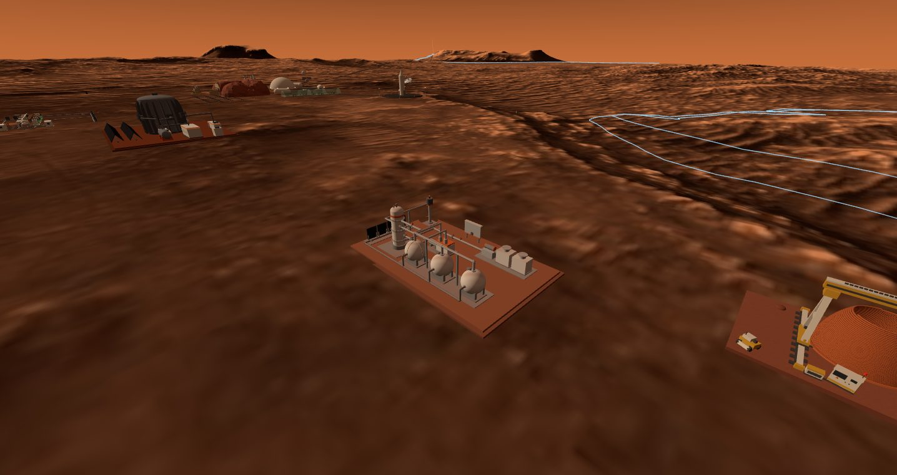
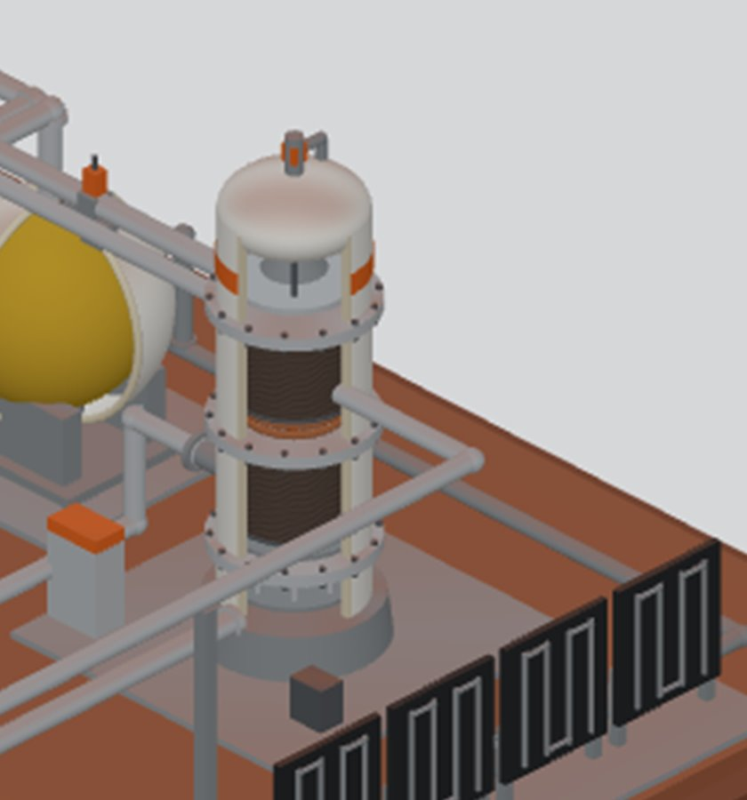
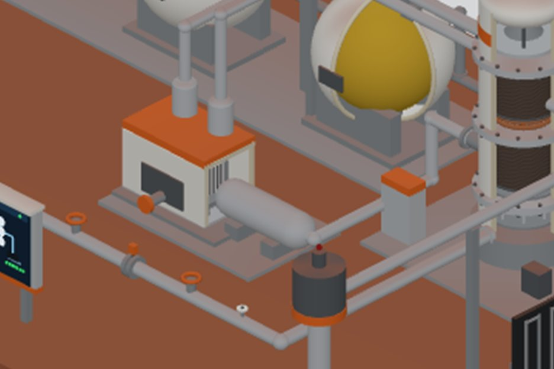
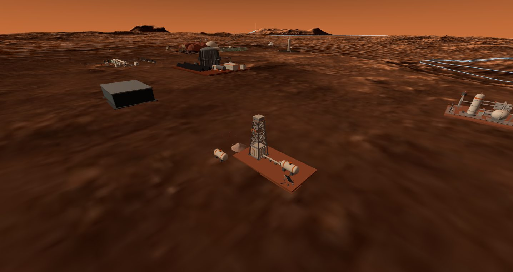
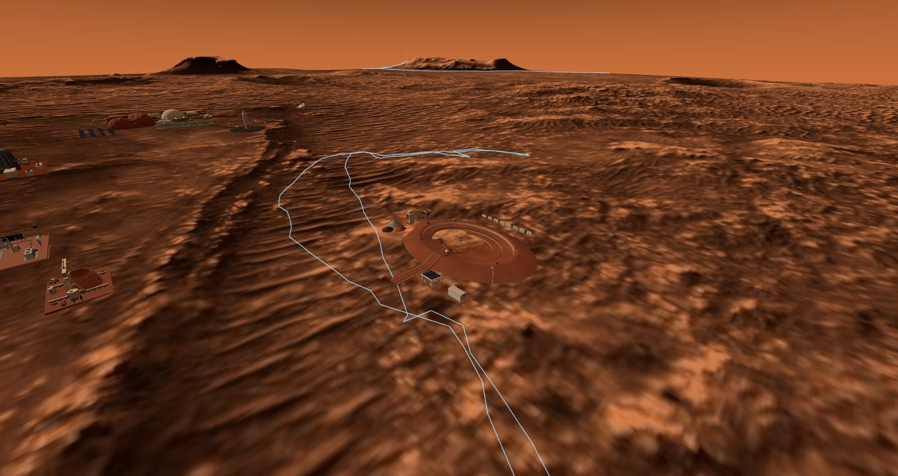
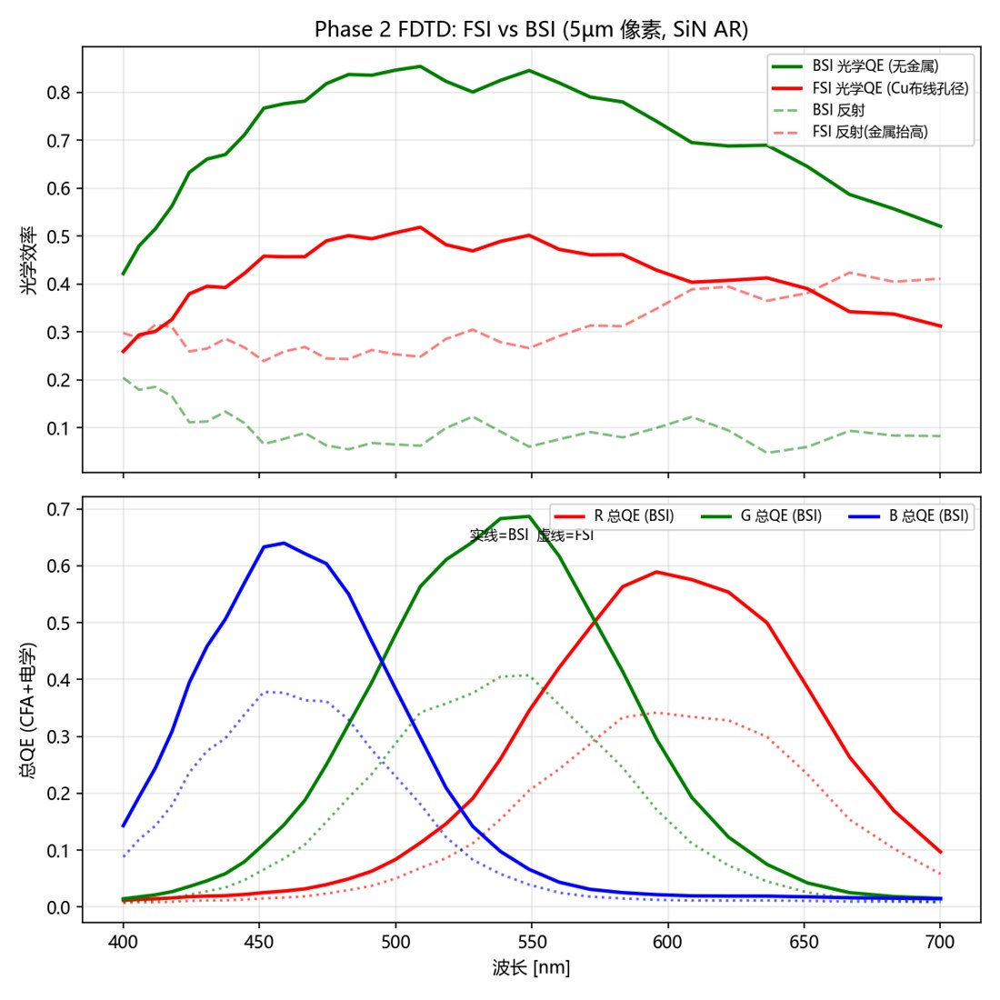
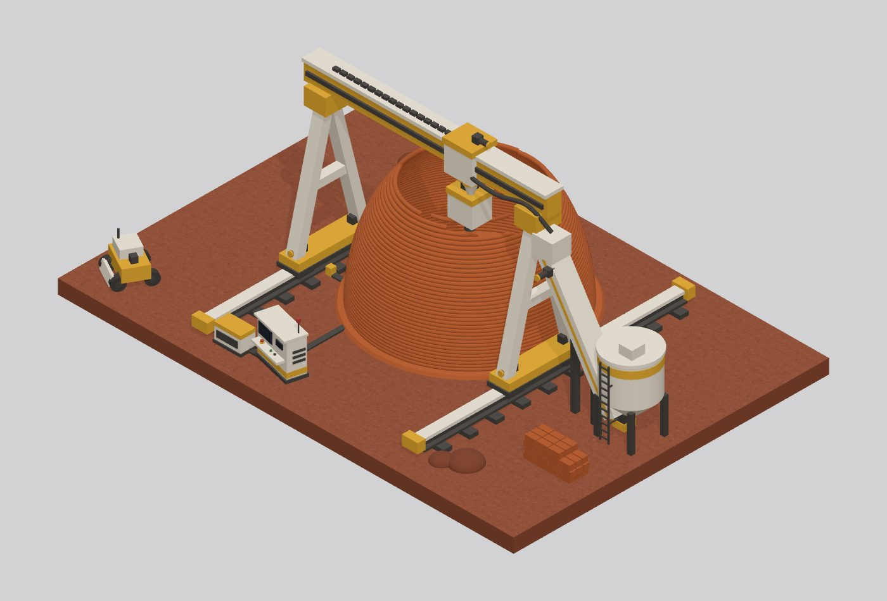
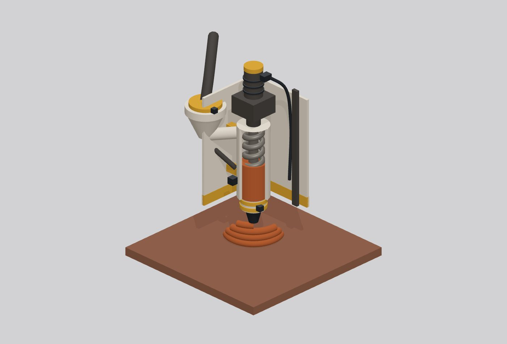

Four plants that turn Mars itself into supplies: water melted out of frozen ground, methane and oxygen made from the sky, regolith dug by a robot that navigates with a camera designed down to the pixel, and food grown under a printed-ring dome. The flagship number: one Mars year of well life, bought with 15 kilowatts.
A supply chain with no supply ships: every input comes out of the planet, and every output feeds another district.
The Rodwell ice well melts a cavity in the subsurface ice sheet and pumps up 380 L per sol of drinking and process water. The Sabatier plant takes that water plus atmospheric CO₂ and turns them into rocket propellant — the LOX/LCH₄ that fills the ascent vehicle across the launch plaza. The mine feeds sinter feedstock to the regolith printer that built the greenhouse dome's foundation ring, and the dome grows the leafy greens for the crew that runs it all. Each arrow below is a real pipe, belt or tank in the city model.

Geometry first: every mechanism that matters is modeled, and the cutaways face the camera.
The propellant loop. Mars air is 95% CO₂ but only ~600 Pa — density 0.015 kg/m³, so feeding the reactor 1.5 kg/h means swallowing ~100 m³ of atmosphere every hour through two dust-filter banks and a two-stage scroll compressor. In the reactor column, CO₂ + 4H₂ → CH₄ + 2H₂O over two Ru/Al₂O₃ beds (ΔH ≈ −165 kJ/mol — the interbed cooling coil exists because the reaction would otherwise sinter its own catalyst). Product water is condensed and electrolyzed in a 13-plate PEM stack; the hydrogen goes back to the reactor, the oxygen is the other half of the propellant. Hydrogen circulates — the plant's net inputs are only water and sky.
Zero-boil-off storage. The three 4 m spheres are vacuum-jacketed with a gold MLI inner vessel; a reverse-turbo-Brayton cold head on each tank cancels heat leak outright, because during 480 unattended sols any boil-off is production thrown away. Their waste heat leaves by radiation only — 23 m² of black panels rejecting ~12 kW against a need of ~9, since convection is not on the menu at 600 Pa.


The well that ages. The Rodwell is not a static source: every 380 L drawn grows the melt cavity by 0.41 m³, the wall area grows with it, and conduction losses rise until the heater can no longer hold the melt. A Stefan moving-boundary model showed the 15 kWe design point survives a full Mars year (669 sol) while 12 kWe dies at ~450 — power buys lifetime, not flow rate. A twin 13 m³ tank bank banks 60 sols of global-dust-storm water with 14% margin.
The mine that sees. The RASSOR-class digger navigates by an onboard 64×64 CIS camera at 5 Hz — not a game sprite but a designed sensor: QE 0.60 (BSI, FDTD-verified), 17,880 e⁻ full well, 1.76 e⁻ read noise, fed through a full photon-to-DN noise model before the obstacle logic ever sees a pixel. Its motion curves are baked from MuJoCo dynamics under 3.71 m/s² gravity, drum cutting loads included.
The printer that knows its limit. A 12 m portal gantry drives an auger-extrusion head that lays sulfur-bonded regolith at up to 4.8 L/s — concrete that cures by cooling in minutes, not by hydration in hours, which is the whole reason sulfur wins on a waterless planet. The half-built dome on its pad is printed to the material's honest limit: at 6 m height the shell leans 42° and each 160 mm layer overlaps the one below by only 29%, so the rim steps back in short spiral arcs and waits for a prefab cap. The precision budget is counter-intuitive: the beam sags just 0.4 mm under full load but breathes 11.5 mm across an 80 K Martian day — the gantry's real enemy is thermal drift, handled by a floating bearing and position feedback, not by more steel.
The dome that pushes up. 55 kPa inside a ⌀26 m ETFE membrane is a 29 MN uplift — three thousand tonnes trying to leave the planet. That is why the printed regolith foundation ring outweighs the dome it anchors: ballast plus ground anchors must beat uplift by 1.5×, and at 0.38 g weight alone doesn't get there.





Every number above, and which run produced it.
| Claim | Value | Produced by |
|---|---|---|
| CH₄ rate to fill the MAV in 480 sol | 0.55 kg/h | mars/EQUIPMENT.md §1 sizing chain |
| Atmosphere swallowed for 1.5 kg/h CO₂ | ~100 m³/h | res-isru-01 info.json · ρ=pM/RT check |
| Electrolysis power (stack / with BOP) | 18 / ~25 kWe | mars/EQUIPMENT.md §7 power balance |
| Cryo radiator closure | 12 ≥ 9 kW | res-isru-01 info.json · Stefan–Boltzmann account |
| Tank farm vs one MAV load | 100 vs 35.6 m³ | res-isru-01 info.json · volume account |
| Well life at 15 kWe / at 12 kWe | >669 / ~450 sol | TS-01 R1 Stefan moving-boundary model |
| Dust-storm water bank endurance | 700 sol, 0 outage | TS-01 R1 pressure envelope (twin 13 m³) |
| Dome pressure uplift | 29 MN | res-dome-01 info.json · pressure-vessel account |
| Foundation ballast requirement | 1.5× ≈ 44 kt | res-dome-01 info.json · ballast account |
| CIS camera QE / full well / read noise | 0.60 / 17,880 e⁻ / 1.76 e⁻ | CIS device campaigns (TCAD + FDTD) |
| Digger motion under Mars gravity | 3.71 m/s² baked | MuJoCo dynamics bake · res-mine-01 |
| Vision-autonomy long run | 150 s · 3 cycles · 2.4 m | engine sensor-channel test, mars/STATUS.md |
| Hot-pixel failure cliff | ~12% | sensor-defect joint experiment · res-mine-01 |
| Print flow at full traverse | 4.8 L/s | models/ops-printer-01/info.json · flow account |
| Dome layer overlap at 6 m height | 29% (limit) | ops-printer-01 overhang account · r(y) profile |
| Gantry beam sag vs thermal drift | 0.4 / 11.5 mm | ops-printer-01 stiffness + ΔT 80 K account |
The honest ledger: wrong by 10×, wrong by 75%, and a cutaway that showed a blank plate.
The lost order of magnitude. Design basis v1 said the CO₂ intake swallows 1,100 m³/h. Writing the knowledge card forced the closure check — ρ = pM/RT = 0.015 kg/m³ gives 100 m³/h. The number had sat wrong in EQUIPMENT.md until the rule "no number without a ledger anchor" caught it. That rule is why section 03 exists.
The optimistic well. The first well-life estimate used a quasi-steady heat balance and came out ~75% too generous. The Stefan moving-boundary redo showed the cavity's growing wall area steadily eats the heater budget: 12 kWe dies at ~450 sol. The design point moved to 15 kWe, and a second well site (WELL-2, 15.1 m spacing against cavity merge) went into the model as a consequence.
Dropped into the radiator field. The ISRU plant's first placement put it inside the footprint of the power district's 429 m radiator array — coordinates picked blind, geometry clipping straight through the panels. It moved 115 m north; the incident is one reason the city now runs a SAT-based layout audit on every manifest change.
Cutaways that showed nothing. First pass, the PEM stack was stacked along the viewing axis — the cutaway proudly displayed a blank end plate. Rotated 90°, the 13-plate zebra stripes read instantly. Same lesson twice: the radiator bank was first placed behind the 4 m tank spheres and was invisible from the presentation view; it now stands on the platform's open edge.
The conveyor that vanished. In the printer build, the feedstock conveyor was first routed almost exactly along the isometric camera axis — present in the geometry, invisible on screen. It took a screenshot diff to notice a major mechanism was simply not readable, and the whole feed line was rerouted to cross the view. The same build's camera auto-fit framed the site off-center for two rounds: the group bounding box's phantom corners (tall gantry × wide pad, nothing actually there) inflated the frame until the fit was redone against every mesh individually. And one romantic idea died by division: "the site loader can feed the printer" lasted until 38 t/h ÷ 0.44 t per trip returned 86 trips an hour — the mine's haulers do bulk delivery, the loader keeps its dignity doing cleanup.
The hot-pixel cliff. The defect-injection experiment on the mine robot's camera found dead pixels degrade the obstacle logic linearly — but hot pixels hit a cliff near 12%: they drag the auto-exposure down until real terrain falls below threshold and the robot sees phantom obstacles everywhere. A sensor spec became a mission-safety number.
The district is walkable in the city viewer.
Run the viewer locally (repo README), enable the colony layer, and walk the resource quarter north of the radiator field. Deep link: viewer/?colony=1&x=40&z=5&y=12&yaw=3.14&fly=1
Worth doing: walk within 25 m of the Sabatier reactor and the knowledge cards pop with the same numbers as section 03; press V near any asset to orbit it — the reactor, tank and compressor cutaways all face the default view; find the digger at the mine and watch it run its MuJoCo-baked dig-haul-dump cycle on camera vision alone. At the print site (?inspect=ops-printer-01), look for the fresh bead under the nozzle — it marks exactly where the spiral rim stopped printing.